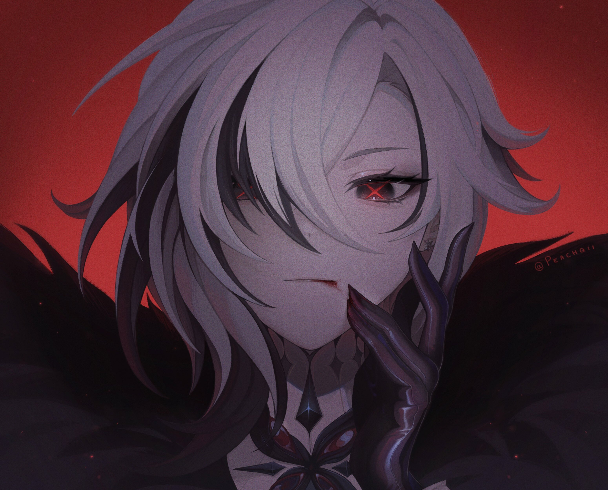
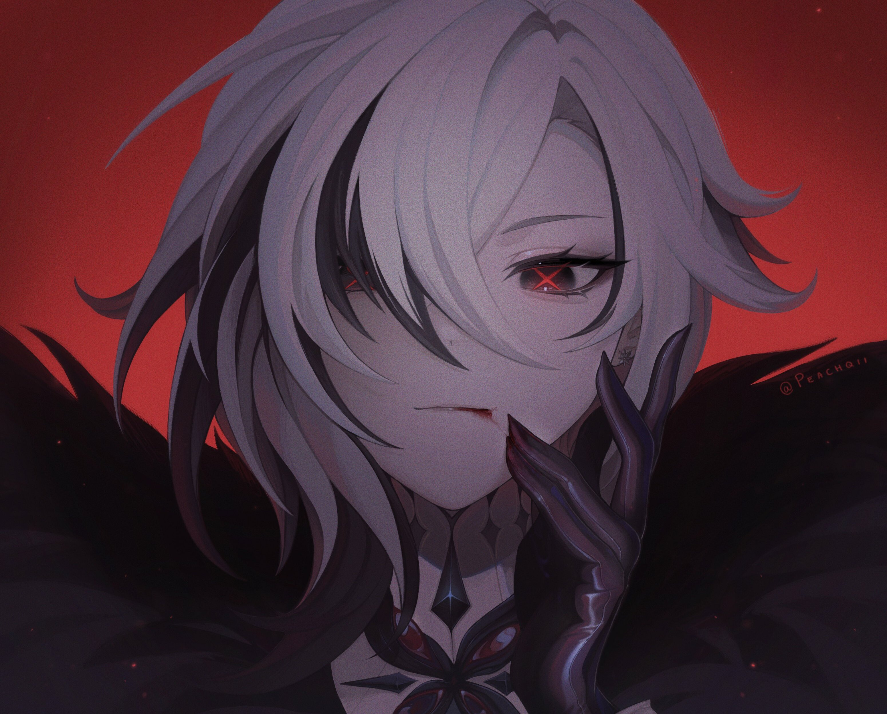
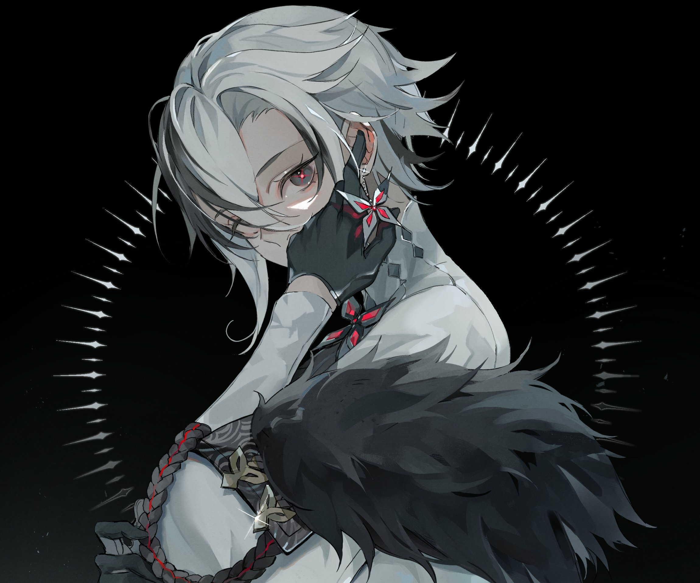
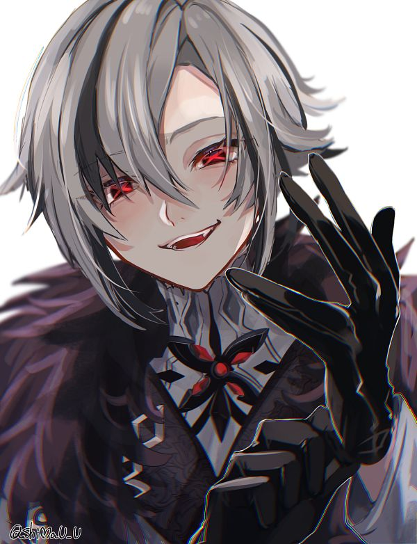
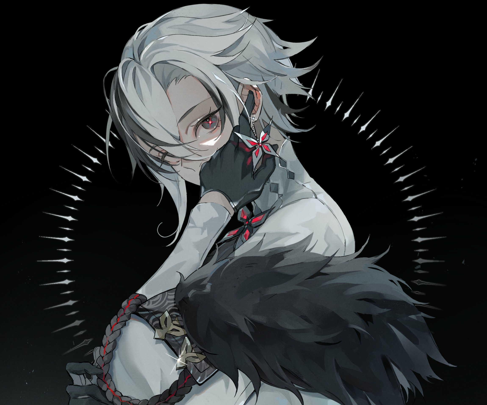
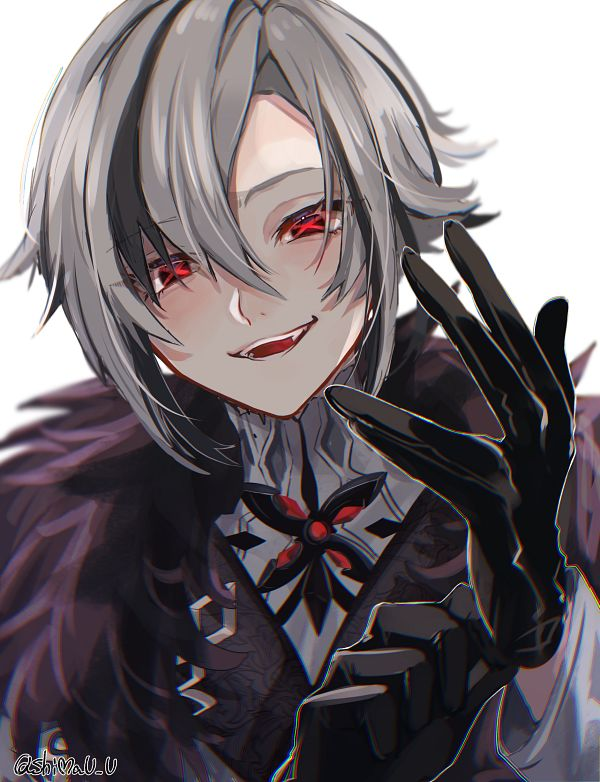
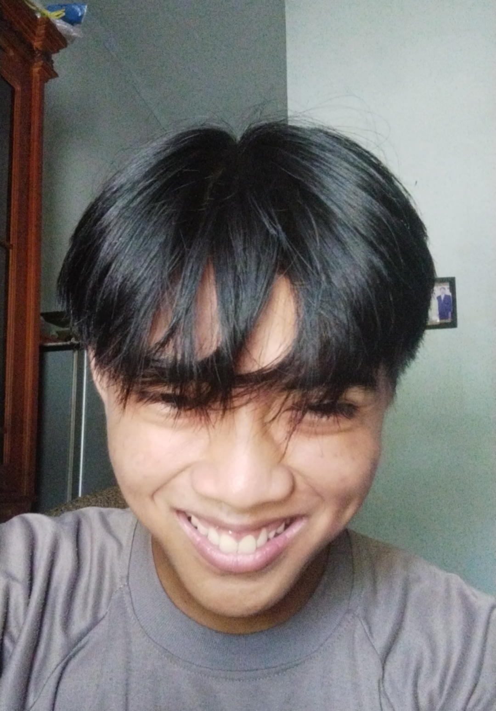
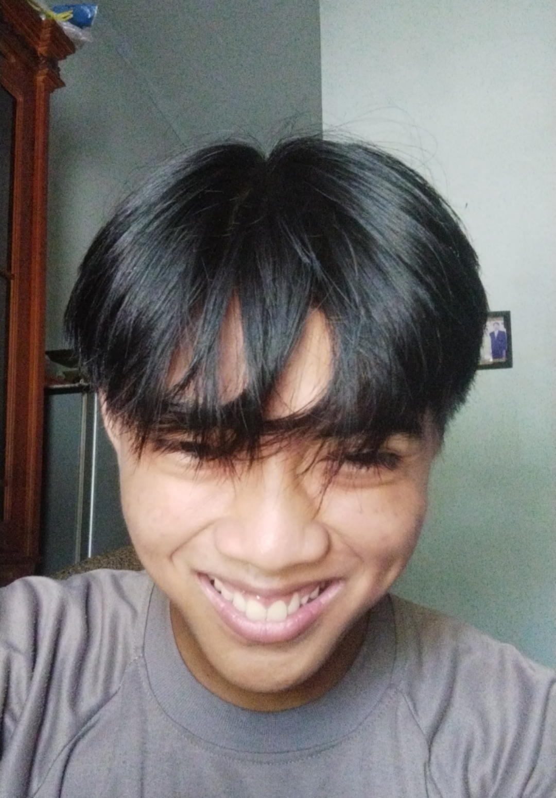

Halo, nama saya Gustavolta Khizqi Ismail. Saya adalah seorang murid di SMKN 2 SURABAYA dan adalah anak kelas RPL.
Saya sedang mendalami beberapa jenis hal. Seperti html,css,Js,Java,C++, dan PHP.
Website ini menggunakan teknologi seperti HTML, CSS, dan Java Script
Ada tambahan dari repository lain yang saya gunakan, seperti google icon, google font, dan animasi kecil dari animate.css
Halo, nama saya Gustavolta Khizqi Ismail. Saya ingin berbagi kisah
hidup singkat saya yang penuh warna dengan Anda. Saya lahir di
sebuah kota besar yang indah, dan dari kecil saya sudah menunjukkan
minat dalam dunia teknologi. Ketika usia saya masih muda, saya
sering menghabiskan waktu bermain-main dengan perangkat elektronik
dan penasaran tentang bagaimana segala sesuatunya bekerja.
Minat saya dalam teknologi semakin berkembang ketika saya mulai
belajar tentang coding. Meskipun saya adalah orang yang sedikit
pemalu, dunia coding memberi saya cara untuk mengekspresikan diri
dan menunjukkan kreativitas saya. Saya suka menciptakan berbagai
jenis website, mulai dari blog pribadi hingga proyek-proyek yang
lebih besar seperti e-commerce. Setiap kali saya berhasil
menyelesaikan sebuah proyek, perasaan kepuasan dan prestasi mengalir
di dalam diri saya. Tidak hanya bermain dengan kode, saya juga
menemukan ketenangan dalam musik. Bermain gitar adalah salah satu
hobi saya yang paling menyenangkan. Melodi yang indah dari senar
gitar membawa kelegaan dan kebahagiaan bagi saya. Saya juga senang
mendengarkan berbagai jenis musik, yang membantu mengisi hari-hari
saya dengan semangat.
Dalam perjalanan hidup saya, saya belajar untuk tidak hanya berfokus
pada bidang teknologi, tapi juga memberikan perhatian pada kesehatan
dan kesejahteraan diri. Saya menyadari bahwa makanan yang sehat
dapat memberikan dampak positif pada tubuh dan pikiran. Oleh karena
itu, saya selalu berusaha untuk menjaga pola makan yang seimbang,
dengan makanan kesukaan seperti pecel, nasi goreng, mie goreng, dan
berbagai jenis buah.
Selain teknologi dan musik, saya juga memiliki ketertarikan dalam
seni. Saya senang menggambar anime dan manga, dan sering
menghabiskan waktu luang untuk menciptakan karya-karya seni yang
menggambarkan imajinasi saya. Ini adalah momen di mana saya dapat
bersembunyi dari dunia luar dan memasuki dunia fantasi yang penuh
warna. Meskipun saya cenderung pemalu, saya selalu berusaha untuk
menunjukkan kepedulian dan perhatian pada orang lain. Saya percaya
bahwa kebaikan dan sikap positif dapat membuka pintu untuk menjalin
hubungan yang baik dengan orang lain. Saya selalu berusaha
memberikan kesan yang baik pada setiap pertemuan dengan orang baru.
Hidup saya penuh dengan tantangan dan perjalanan yang menarik. Saya
percaya bahwa setiap pengalaman yang saya hadapi, baik suka maupun
duka, telah membentuk saya menjadi pribadi yang lebih baik. Saya
bersyukur atas semua kesempatan dan dukungan yang saya terima dari
keluarga dan teman-teman saya dalam mengejar impian dan minat saya.
Saya yakin bahwa perjalanan hidup saya masih panjang dan penuh
potensi. Saya berharap dapat terus mengejar impian dan mencapai
tujuan yang saya tetapkan, sambil tetap menjadi diri saya yang
autentik. Semoga cerita hidup saya dapat menginspirasi orang lain
untuk berani mengejar apa yang mereka cintai dan percaya bahwa tidak
ada yang tidak mungkin jika kita berusaha dengan sungguh-sungguh.
Itulah sedikit cerita tentang diri saya, Gustavolta Khizqi Ismail.
Terima kasih telah membaca!

 

 




 

Copyright@2023